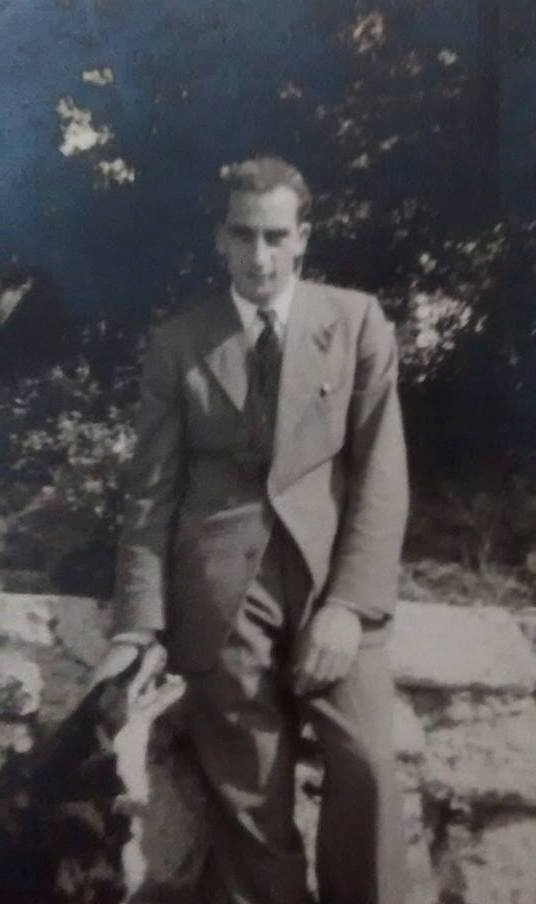
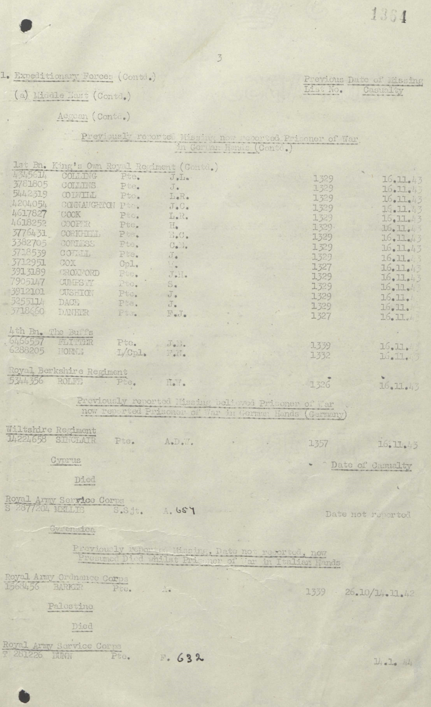
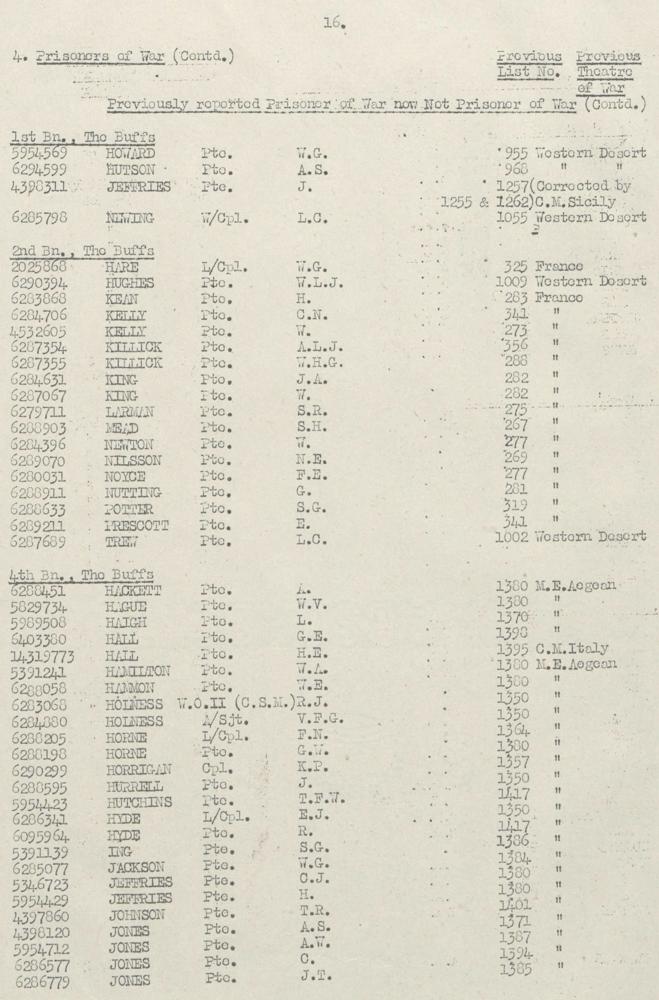
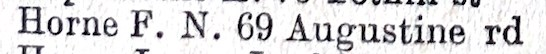
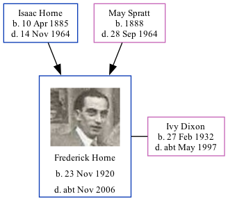

Frederick Norman Horne 1920 - c2006
[ Home ] | [ Calendar ] | [ Surnames Index ] | [ Family History ]The 6th of 7 children of Isaac Horne (a hay trusser & thatcher heavy worker market gardener) and May Spratt, Frederick Horne, the uncle of <a href="I1.html">Nigel Horne</a>, was born in Minster, Thanet, Kent, England on Nov 23, 1920<span class="citation">1,2,3,4</span>. He married Ivy Dixon in Thanet, Kent, England around Aug 1961<span class="citation">5</span>.</p><p>Throughout his life, Frederick lived in several places: at Pansy Cottage, Way, Minster in Thanet on Jun 19, 1921<span class="citation">1</span>; in Oschatz, Saxony, Germany in 1942<span class="citation">6</span>; and on 69 Augustine Road, Minster in Thanet in 1963<span class="citation">7</span>. During 1942, he was serving in the military in Camp IV-G, Oschatz, Saxony, Germany (<em>lance Corporal. POW. The Buffs</em>).<p>He died <i>c.</i> Nov 2006 in Minster<span class="citation">2,4</span> (age: 86).
Parents
- Isaac was born on Apr 10, 1885
- May was born in 1888
Citations
- 1921 Census Of England & Wales - Findmypast (was the son of the head of the household)
- England & Wales deaths 1837-2007 - Findmypast
- England & Wales, Birth Index: 1916-2005 Online publication - Provo, UT, USA: The Generations Network, Inc., 2008.Original data - General Register Office. England and Wales Civil Registration Indexes. London, England: General Register Office. © Crown copyright. Published by permission of the Cont
- England & Wales, Death Index: 1984-2005 Online publication - Provo, UT, USA: The Generations Network, Inc., 2007.Original data - General Register Office. England and Wales Civil Registration Indexes. London, England: General Register Office. © Crown copyright. Published by permission of the Cont
- England & Wales, Marriage Index: 1916-2005 Online publication - Provo, UT, USA: The Generations Network, Inc., 2009.Original data - General Register Office. England and Wales Civil Registration Indexes. London, England: General Register Office. © Crown copyright. Published by permission of the Cont
- UK, British Army Prisoners of War, 1939-1945 Online publication - Provo, UT, USA: Ancestry.com Operations Inc, 2009.Original data - Prisoners of War of British Army, WWII. CD. Unpublished. The Naval and Military Press, Ltd.Original data: Prisoners of War of British Army, WWII. CD. Unpublished. The Na
- 1963 Kelly's Thanet Directory
Media
Mum and Dad Marriage

Frederick Norman Horne
Frederick Horne

Frederick Horne - POW record

POW Papers 2

1963 Kelly's Thanet Directory

England & Wales deaths 1837-2007 Transcription - BMD-D-2006-12-87150679
England & Wales births 1837-2006 Transcription - BMD-B-1920-4-AZ-000707-114
England & Wales marriages 1837-2008 Transcription - BMD-M-1961-3-AZ-000794-085
England & Wales marriages 1837-2008 Transcription - BMD-M-1961-3-AZ-000123-054
British Army Casualty Lists 1939-1945 Transcription - GBM-WO417-0642629
British Army Casualty Lists 1939-1945 Transcription - GBM-WO417-1030609
1921 Census of England & Wales - GBC/1921/RG15/04430/0061/06
Family Tree
Generated by Ged2Site. Last updated on Jul 20, 2025